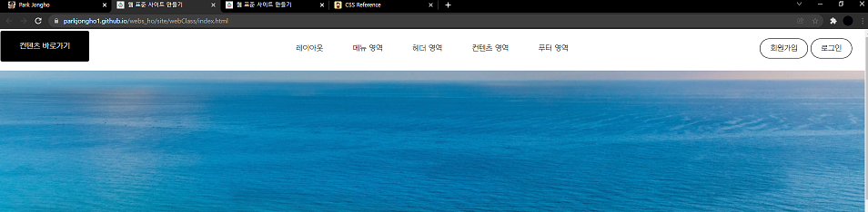

CSS 이미지 표현법
IR 기법
ir기법을 사용하는 이유
- 의미있는 이미지의 대체 텍스트를 제공하는 경우
- 의미있는 이미지의 대체 텍스트로 이미지가 없어도 대체 텍스트를 보여주고자 할 때 사용
- 대체 텍스트가 아닌 접근성을 위한 숨김 텍스트를 제공할 때
Phark Method - 이미지 대체 텍스트
이미지로 대체할 엘리먼트에 배경이미지를 설정하고
글자는 text-indent를 이용하여 화면 바깥으로(-9999px만큼 내어 쓰기) 빼내어 보이지 않게 하는 방법
.ir-pm {
display: block;
overflow: hidden;
font-size: 0;
line-height: 0;
text-indent: -9999px;
}WA IR - 이미지 대체 텍스트
이미지로 대체할 엘리먼트에 배경이미지를 설정하고
글자는 span 태그로 감싼 후 z-index:-1을 이용하여 화면에 안보이게 처리
.ir-wa {
display: block;
overflow: hidden;
position: relative;
z-index: -1;
width: 100%;
height: 100%;
}SO IR - 스크린 아웃
대체 텍스트가 아닌 접근성을 위한 숨김 텍스트를 제공할 때
.ir_so {
overflow: hidden;
position: absolute;
width: 0;
height: 0;
line-height: 0;
text-indent: -9999px;
}접근성을 위한 숨김 텍스트(블록) - Block Formatting Context
접근성을 위한 숨김 텍스트 중에서 블록 요소의 태그를 사용하는 경우에 쓰인는 스타일 코드입니다.
.ir-text-bfc {
overflow: hidden;
border: 0;
margin: -1px;
width: 1px;
height: 1px;
clip: rect(1px, 1px, 1px, 1px);
clip-path: inset(50%);
}접근성을 위한 숨김 텍스트(인라인) - Inline Formatting Context
접근성을 위한 숨김 텍스트 중에서 인라인 요소의 태그를 사용하는 경우에 쓰인는 스타일 코드입니다.
.ir-text-ifc {
overflow: hidden;
border: 0;
position: absolute;
width: 1px;
height: 1px;
clip: rect(1px, 1px, 1px, 1px);
clip-path: inset(50%);
}ir기법을 사용한 예
